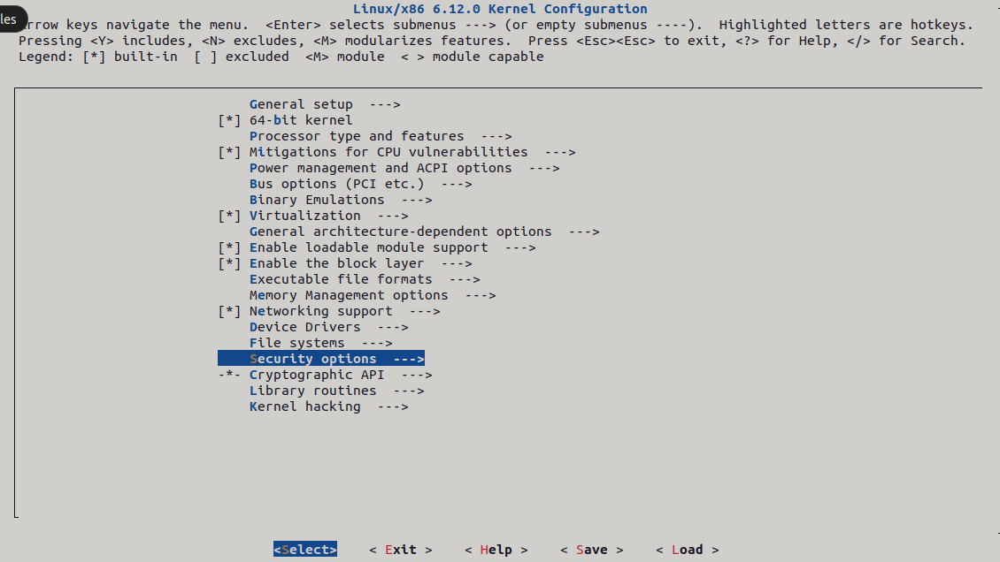

Installation¶
Building TSEM kernel¶
Installation of TSEM infrastructure, like it or not, involves compilation of the Linux kernel. For this reference, I’m using Ubuntu 22.04 as it seems to be, what the developers do some of their testing on (as mentioned in parts of Quixote documentation https://github.com/Quixote-Project/Quixote).
Getting the kernel code¶
You have to firstly acquire the kernel source code with the TSEM patches. This can be done in following ways:
You can download the source code from the official linux kernel git repository and apply the TSEM patches manually from linux kernel mailing list. (https://blog.reds.ch/?p=1814 can serve as a good guide for that)
Or more preferably you can clone the kernel provided by the Quixote project: https://github.com/Quixote-Project/TSEM Like so:
git clone --depth 1 --all <most recent kernel version> https://github.com/Quixote-Project/TSEM
<most recent kernel version> being the most recent kernel version available in the TSEM repository. For example at the time of writing it would be:
$ git clone --depth 1 --branch TSEM-6.12 https://github.com/Quixote-Project/TSEM

Dependencies¶
Following dependencies will need to be installed before proceeding with the compilation:
$ sudo apt-get install git gcc make build-essential libncurses5-dev fakeroot ncurses-dev xz-utils libssl-dev bc flex libelf-dev bison exuberant-ctags
Dependencies needed for successful kernel compilation always vary, but the difference will almost always be in the package names.
Generating kernel .config¶
In order to compile Linux kernel one will also need a suitable .config file. This can be copied form your current distribution:
$ cat /lib/modules/$(uname -r)/build/.config > .config
Or generated using:
$ make localmodconf
in your kernel compilation directory. I would personaly suggest this approch as compiling kernel with all the drivers/modules built into the kernel can take a vary long time – depending on your computer’s processing power.
Next you need to enable TSEM in the .config, there are many ways to do this.
You can use make menuconfig where you need to select Trusted Security Event Modeling option under Security options, set TPM PCR index for root domain to 11

and add string “tsem” to the Ordered list of enabled LSMs at the buttom of the page.

Don’t forget to save and exit.
I would also recommend adding “-tsem” or some other name to the Local version option in General setup of the menuconfig for easier determination if the correct kernel is installed afterwards.

Building the kernel¶
After having successfully completed the previous steps you are ready to compile the kernel.
run:
$ make -j$(nproc)
Note
The “-j$(nproc)” part is optional however heavily recommended since it utilizes all your CPU cores, not just one (default). Or you can replace it with number of cores you desire, if you know how many cores exactly you want to utilize (e.g. make -j2 for 2 cores). Blindly guessing by putting some ridiculously big number should work as well as it will use all cores available.
After finishing the previous command make sure to install all compiled modules:
$ sudo make modules_install
And finally install the kernel:
$ sudo make install
Now you should be ready to reboot your system. After the reboot make sure to check if the TSEM kernel is installed and that the “tsem” is in the list of enabled LSMs:
$ uname -r
$ cat /sys/kernel/security/lsm
If there is “tsem” in the list of enabled LSMs you can move on to the Quixote setup.
Don’t worry about the trailing hostname at the end — some Linux distributions put newline at the end of the lsm string, others don’t.
Quixote setup¶
- Quixote can be acquired in two ways:
downloading from ftp://ftp.enjellic.com/pub/Quixote (outdated at the time of writing — not recommended)
compiling from source (covered in this section)
Getting the source code¶
Downloading the Quixote sources can get a little tricky.
Firstly you need to clone the Quixote repository using:
$ git clone --recurse-submodules https://github.com/Quixote-Project/Quixote.git
Possible Issue
In case, you don’t have github setup with your RSA key — ssh method, the you will be asked to confirm fingerprint of github.com, the he will fail, since the sub-repository is referenced by ssh (git@…). An effective but a little dirty workaround for that would be manually rewriting the ssh access method to web URL and retrying the pull:
$ cd Quixote
$ sed -i 's/url = git@github.com:Quixote-Project\/HurdLib.git/url = https:\/\/github.com\/Quixote-Project\/HurdLib.git/g' .git/config
$ git pull --recurse-submodules
Note
It is not recommended to interact with git configs manually, but so is interacting with github web URLs.
Dependencies¶
For compilation of Quixote, you will need at minimum these packages:
$ sudo apt-get git gcc make flex libssl-dev libcap-dev libxen-dev pkg-config elfutils
You should already heave some of them from TSEM kernel compilation. Complete list of packages is mentioned in case of compilation on systems with pre-compiled kernel installed.
The compilation is quite straight forward:
$ make
Warning
In case you use more CPU cores using the “-j” argument, you may encounter race conditions during compilation — you may need to recompile the Quixote multiple times to get it right as the dependencies aren’t set up correctly and a race condition might occur, where a file starts compiling before all its dependencies are compiled, resulting in compilation error. Therefore I recommend using just the default one core, as it isn’t too long of a compilation.
Installation¶
Installation is also very straight forward:
$ sudo make install
PATH¶
This falls more into the usage category, but I think it is good practice to put the installation paths into the PATH variable for ease of use.
For example like so:
$ echo "PATH=/opt/Quixote/sbin:/opt/Quixote/bin:$PATH" >> /etc/environment
Note
The change will take effect after new shell login/reboot or running “source /etc/environment”.